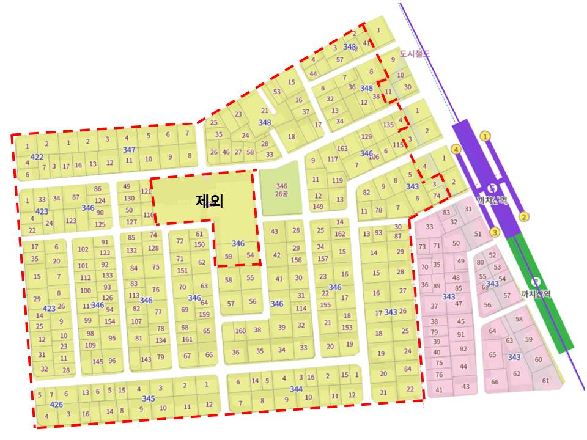

본인 확인
동의 의사가 실제 토지·건물 소유자 본인의 것임을 확인하기 위함입니다. 주민등록상 성명·주소와 등기부상 명의가 일치해야 동의서로서 효력을 가집니다.
민간 도심복합사업 추진위
주민 여러분께 사업 구역과 동의 절차를 안내드립니다.
붉은 점선 안쪽이 본 사업의 대상 구역입니다. 지번 단위로 표시되어 있으니, 본인 주소의 지번이 구역 내에 포함되는지 확인해 보실 수 있습니다.

본인 필지가 구역에 포함되는지 불분명하시면 아래 연락처로 문의해 주시기 바랍니다.
동의서를 제출하실 때 주민등록증(또는 신분증 사본)과 지장 날인을 함께 요청드리는 이유를 간단히 설명드립니다.
동의 의사가 실제 토지·건물 소유자 본인의 것임을 확인하기 위함입니다. 주민등록상 성명·주소와 등기부상 명의가 일치해야 동의서로서 효력을 가집니다.
서명만으로는 제3자가 모방하거나 위조하기가 비교적 쉽습니다. 지장(무인) 날인은 지문이 함께 남기 때문에 나중에 본인 동의 여부를 다투는 분쟁이 생겼을 때 객관적인 증거가 됩니다.
도심복합사업의 주민 동의 요건은 관련 법령에서 정해진 절차를 따라야 하며, 그 과정에서 본인 확인과 날인 방식이 함께 요구됩니다. 요건을 갖춘 동의서만이 사업 추진의 근거로 인정됩니다.
사업은 장기간 진행되기 때문에, 중간에 "나는 동의한 적 없다"는 이의가 제기될 수 있습니다. 본인 확인 자료와 지장이 남아 있어야 추진위가 절차적 정당성을 입증할 수 있고, 결과적으로 사업 전체의 안정성이 높아집니다.
제출하신 신분증 사본과 동의서는 사업 동의 확인 목적 외에는 사용되지 않으며, 관련 법령에 따라 안전하게 보관·관리됩니다. 보관 기간과 파기 시점, 열람 권한 등에 대한 자세한 내용은 추진위원회로 문의해 주시기 바랍니다.
궁금한 점이나 동의서 제출 관련 문의는 아래로 연락 주시면 안내해 드립니다.
최은정 추진위원